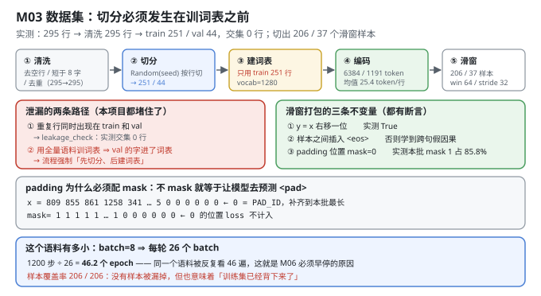
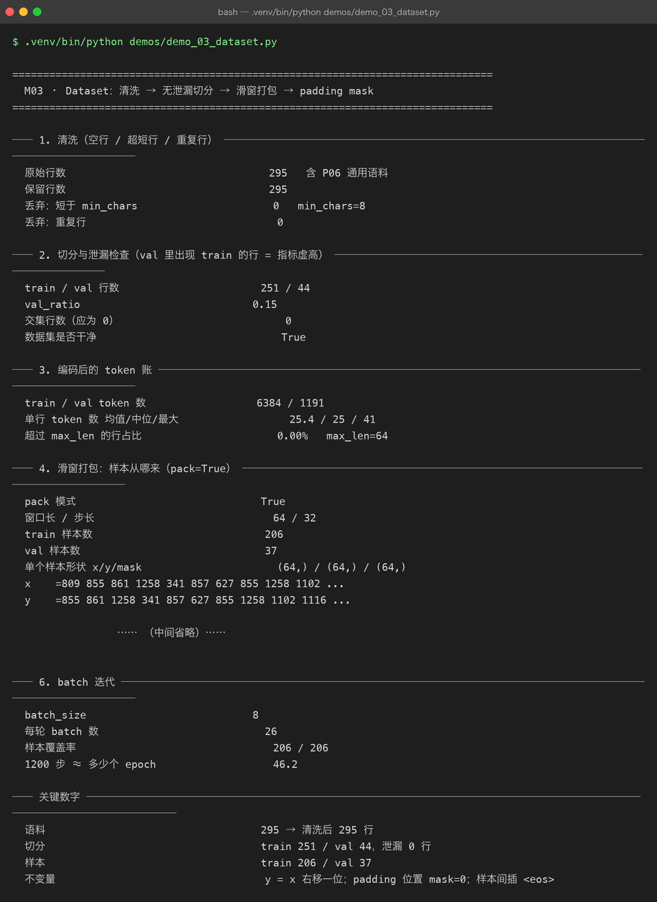

Milestone 03 — Dataset：切分必须发生在训词表之前
M02 解决了"文本怎么变成 id"。这一章解决"id 怎么变成训练样本"，而它的核心不是滑窗，是两条泄漏路径：
- 重复行同时出现在 train 和 val —— 验证指标会虚高，因为模型"见过"其中一份。
- 用全量语料训词表 —— 验证集里的字符提前进了词表，等于是把答案的字母表给了模型。
第二条比第一条隐蔽得多，而且 M02 已经证明它确实发生了（验证集有 23 个字符在词表之外）。
1. Why：样本的等价性写成不变量，而不是"应该没错"
滑窗打包很容易写出"看起来对"的实现。所以本章把三条不变量做成可断言的事实：
y = x右移一位（语言模型的定义）；- 样本之间插入
<eos>（否则最后一位的下一 token 是下一行开头，模型会学到跨句子的假因果）； - padding 位置的
mask = 0（不 mask 就等于让模型去预测<pad>）。
不变量能被断言，就说明它不是"我记得应该这样"。
2. Design：五步流水线 + 两条泄漏护栏
① 清洗（去空行 / 短于 min_chars / 去重）
② 切分（Random(seed) 按行切 → train / val）
③ 建词表（只用 train_lines） ← 泄漏护栏 #1
④ 编码（train_ids / val_ids）
⑤ 滑窗打包（pack=True，window=max_len，stride）泄漏护栏：
leakage_check(train, val)直接求交集，非空就抛错（build_dataset里的硬检查）；- 流程顺序强制"先 ② 后 ③"，
build_dataset内部不接受外部传入的 tokenizer 之外的口子。
两种样本构造（make_examples）：
pack=True—— 把语料首尾相接再滑窗，样本几乎全是有效 token，少 padding；本项目选它。pack=False—— 每行一个样本，行短就大量 padding，浪费算力。

3. Real-run evidence（来自 demos/out/demo_03_dataset_terminal.txt）

3.1 清洗
原始行数 295 含 P06 通用语料
保留行数 295
丢弃：短于 min_chars 0 min_chars=8
丢弃：重复行 0清洗"什么都没删"也是有用信息：它说明这份语料质量本身是干净的，后面所有数字都没有被清洗动作影响。
3.2 切分与泄漏检查
train / val 行数 251 / 44
val_ratio 0.15
交集行数（应为 0） 0
数据集是否干净 True3.3 编码后的 token 账
train / val token 数 6384 / 1191
单行 token 数 均值/中位/最大 25.4 / 25 / 41
超过 max_len 的行占比 0.00% max_len=64单行最长 41 < max_len 64 ⇒ 截断率 0%。这一行很重要：如果截断率很高，滑窗会把句子尾巴全切掉，而 y 却还在提示"预测下一 token"。
3.4 滑窗打包
pack 模式 True
窗口长 / 步长 64 / 32
train 样本数 206
val 样本数 37
单个样本形状 x/y/mask (64,) / (64,) / (64,)
x =809 855 861 1258 341 857 627 855 1258 1102 ...
y =855 861 1258 341 857 627 855 1258 1102 1116 ...
y 是否等于 x 右移一位 True
样本之间插入 <eos> True 不插的话模型会学到跨句子的假因果3.5 padding 与 mask
batch 形状 (4, 30) batch=4, 长度按本批最长补齐
padding 用的 id 0
mask 中 1 的比例 85.8% 其余位置 loss 不计入
mask[0] = 1 1 1 1 1 ... 1 0 0 0 0 0 0
x[0] = 809 855 861 1258 341 ... 5 23 21 0 0 0 0 0 085.8% 是 pack=True 的直接收益：一格里只有 14.2% 是 padding。换成"每行一个样本"，短行一多这个数字会掉到 50% 以下。
3.6 batch 迭代与语料规模
batch_size 8
每轮 batch 数 26
样本覆盖率 206 / 206
1200 步 ≈ 多少个 epoch 46.246.2 个 epoch 是本章最刺眼的数字：1200 步训练里，同一份 206 个样本被反复看了 46 遍。这不是 bug，是语料太小 —— M06 的过拟合曲线和早停机制，根因就写在这里。
4. 踩坑与反直觉发现
- "清洗没删任何东西"也要报出来。 如果清洗悄悄删掉了 40% 的行，后面所有"语料 295 行"的论述就都是错的。统计是证据的一部分。
<eos>不插，模型会学到跨句假因果。 滑窗把...答：模型会以 token token。和下一行问：什么是 RAG？答：...接在一起，y就会在两个完全不同的话题之间求"下一 token"。这类错误在 loss 曲线上完全看不出来。- padding id 用 0 是危险的默认值。 如果 0 同时也是某个真实 token 的 id，mask 写错就会静默地教模型预测一个不存在的词。本项目显式定义了
PAD_ID，并在 demo 里断言"padding 位置确实用了 PAD_ID"。 val_ratio=0.15在 295 行上只切出 44 行，其中「问：…答：…」的完整问答对只剩 7 对（M07 用到）。小语料上，验证集能承载的评测能力比想象中弱得多。
5. Conclusion
- 五步流水线：清洗（295 → 295）→ 切分（251 / 44）→ 建词表（只用 train）→ 编码（6384 / 1191 token）→ 滑窗（206 / 37 样本）。
- 泄漏两条路都堵住了：重复行交集 0；词表只用训练集，验证集的 23 个 OOV 字符就是护栏生效的证据。
- 三条不变量全部有断言：
y = x 右移一位True；样本间插<eos>True；padding 位置mask=0（本批 1 占 85.8%）。 - 截断率 0.00%（单行最长 41 < max_len 64），所以滑窗没有丢句子尾巴。
- 1200 步 = 46.2 个 epoch —— 这个数字预告了 M06 的过拟合，也是"小语料上必须早停"的定量依据。
6. Code map
| 文件 | 职责 |
|---|---|
src/tiny/data.py | load_corpus / clean_lines / split_lines / leakage_check / make_examples（两种打包）/ pad_batch / batch_iter / build_dataset / dataset_report |
demos/demo_03_dataset.py | 6 节：清洗 / 切分与泄漏 / token 账 / 滑窗打包 / padding mask / batch 迭代 |
demos/out/demo_03_dataset_terminal.txt | 本章所有数字的来源 |
assets/dataset.svg | 五步流水线 + 两条泄漏路径 + 三条不变量 |
assets/term-03-dataset.png | 真实运行截图 |
7. Version line
v0.2 → v0.3，数据集落地且泄漏被显式证伪。实测：清洗无丢弃（295 → 295）；train 251 / val 44、交集 0 行；编码 6384 / 1191 token，截断率 0.00%；滑窗产出 206 / 37 个样本，y = x 右移一位、样本间插 <eos>、padding mask=0（mask 有效率 85.8%）三条不变量全部成立。并量出 1200 步 ≈ 46.2 个 epoch，为 M06 的早停提供定量依据。配图 1 张手写 SVG + 1 张真实终端截图。